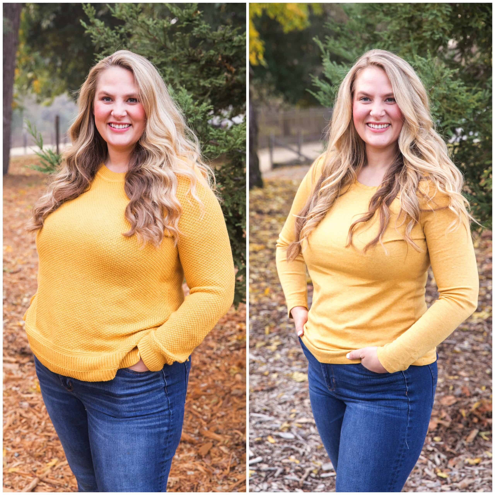

Kerry Roger: ‘When my husband started avoiding sex with me, I knew it was time to make a change’
Starting weight: 83 kg
Weight now: 64 kg
Height: 171 cm

Starting weight: 83 kg
Weight now: 64 kg
Height: 171 cm
Hi there, my name is Kerry Roger, I'm 36 years old and I am from London. A year ago, as I watched my two girlfriends smiling for the wedding photographer in their tight dresses, I wished I felt as confident аs them. I almost burst out of my XL dress, and when I sat down, I felt my sleeves straining so badly, I thought it was going to tear open.
It had been such a struggle to find something to wear. After ordering countless outfits online ( I felt ashamed to go to physical stores) and sending them all back, I’d end up settling on the best of a bad bunch.
I’d always been a bit bigger than the other girls - my classmates, university colleagues, and girlfriends. After I got married and gave birth to my kid (I was 31 back then), things just got worse.
Till my kid turned 3 years old, I ate leftover cakes every single day, and ordered pizza takeaways for dinner. I felt frustrated - I wanted to slim down but I felt powerless when it comes to food.
At first, I turned to meal-replacement shakes and cut out carbs. Within 2 weeks I’d lost 8 kg, but I was so hungry I couldn’t concentrate enough to deal with my tasks at work. So I stopped... and quickly not only regained all the weight I’d lost but the scale was going up like crazy.
I wasn't the only one who found my jelly-like belly repulsive.
My husband began to avoid sex with me. The friends who hadn't seen me in a while remarked with concern how much I had changed…
Feeling fed up with being rejected by my husband - I decided to make a change. My experience with diets had convinced me that it was all about starving yourself, which I didn’t want to do, so I purchased a gym card.
When I entered the gym, I felt so anxious that everyone was staring at me, as if judging me for being “so big” that I just ran out of the building like I was escaping from a nightmare.
I was feeling pretty frustrated… and when I stood on the scale at home, I saw that I was about to “hit” 90 kilos - much more than I’d expected - tears began blurring my vision.
After my failure with diets and gym visits, my real drama started. I fought with my husband every day. In front of the kid. He started calling me hysteric pork and other derogatory names. As expected, the relationship with my husband was getting toxic for both of us. We got divorced…
At that time I was not only fat, but also dumped… in total despair.
How to lose weight in the easy way
Thank God, my depression and obesity didn’t last forever, all thanks to a chat with an old friend of mine - – Jeanne, my former classmate who, just like me, used to be the chubby girl in her early years and struggled to lose weight since a teenager. She comforted me about my failed attempt to train at the gym, telling me, ‘You didn’t miss anything. You can lose weight without sweating there, I myself managed to do it without stepping foot inside the gym.’ To prove me she was right, she sent me pictures of herself. I COULDN'T BELIEVE MY EYES.
She had melted off!!! She had lost 15 kilos in just 2 weeks, thanks to taking a product containing thousands of natural ingredients that speed up the metabolism. Impatiently, I typed: TELL ME THE NAME OF IT! She sent me a link to the official page of the product - Uthin Triple Slim.
It turned out that this thing is THE ONLY EASY weight-loss method that gives results without counting calories like a mathematician or sweating to death in front of the whole neighborhood like an idiot at the gym.
The first week:
After 2 weeks:
On the 30th day:
I no longer feel like I’m trapped inside a body that makes me miserable. I love going shopping for clothes and when I see my reflection in the changing-room mirror, I barely recognise the trendy new me. The divorce with my husband doesn’t frustrate me anymore - I feel ready to welcome a new, healthier love. I’m living my life the way I always wanted to – feeling good inside and out!
P.S. I still drink UTHIN Triple Slim since it gives me more energy and eliminates all the toxins from the body.
Comments
Beatrice B.
I lost over 20 kg with this supplement!
Maia893
It was exactly my daughter’s wedding, the boost that I needed to start taking UTHIN and finally get slim.
Flora
My experience with weight-loss supplements has shown me that UTHIN is the best product ever!
Alyssia Wonderland
Thank you for sharing! I cannot starve myself anymore!! At night, I’m dreaming of opening the fridge and eating it all!
Amelie Stone
After just a week of taking uthin, I’ve already lost around 10 kilos, and I hadn’t felt hungry once, which meant I hadn’t had the urge to snack in secret.
Myra CherryBerry
Story of my life: ‘It had been such a struggle to find something to wear.’ Finding an outfit that suits me well is such a challenge for me. The weight loss pills I’m taking don't work at all!!!
PinkLady_777
This woman's transformation warmed my heart. I was about to start thinking that losing weight is impossible…
Naddy
Kerry's story is truly inspiring! It's amazing to see how she overcame obstacles and found a solution that worked for her. Uthin Triple Slim sounds like a must-try!